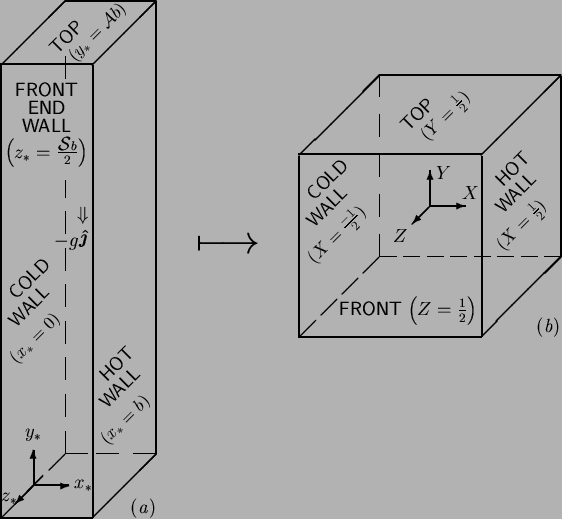
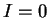
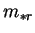
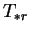

In the low mass transfer rate limit, the field equations are
(6.16)-(6.19), and the velocity
vanishes on all walls (cf. equation 6.20):
Since Gill's (1966) centrosymmetry properties are regained in the low mass transfer rate limit, it is convenient to translate the origin of the coordinates to the centroid of the cuboid, and, as in chapter 4, use normalized coordinates (see equation 2.74, fig. 7.1b).
|  |
A general thermal boundary condition is:
 |
(7.3) |
On the end-walls,  leads to a linear temperature variation, while gives an adiabatic condition. On the hot and cold walls, implies a uniform heat flux while gives an isothermal condition. If the solid presumed to be surrounding the fluid has a higher thermal conductivity, everywhere is a simple and consistent idealization (Batchelor 1954; Leong et al. 1998) , although the condition on the heated and cooled walls and on the connecting walls appears frequently in the literature (Mallinson & de Vahl Davis 1973, 1977; Schladow, Patterson & Street 1989; Fusegi, Hyun & Kuwahara 1991).
A boundary condition for  analogous to (7.2) is:
analogous to (7.2) is:
It will be noticed that the reference levels,  and  are no longer evaluated at the cold wall, but are rather taken as the means.